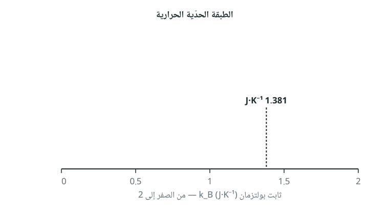

الطبقة الحدّية الحرارية
Thermal boundary layer
الطبقة الحدّية الحرارية هي المنطقة الرقيقة قرب السطح التي تتغير فيها حرارة المائع من حرارة السطح إلى حرارة التيار الحر، وسماكتها تحدد معامل انتقال الحرارة بين السطح والمائع.
عندما يجري مائع فوق سطح بحرارة مختلفة، لا تتغير حرارته فجأة عند السطح بل على مدى مسافة محدودة تُسمى الطبقة الحدّية الحرارية. عند السطح تكون حرارة المائع مساوية لحرارة السطح، وعند الحدّ الخارجي للطبقة تصير مساوية لحرارة التيار الحر. وتزداد سماكة الطبقة δ_t مع المسافة x من الحافة الأمامية وفق δ_t ∝ x/√(Re_x·Pr^(1/3)) في الجريان الصفحي. ومعامل انتقال الحرارة يتناسب عكسياً مع سماكة الطبقة: طبقة أرقّ تعني تدرّجاً حرارياً أشدّ ونقلاً أفضل. مثال: هواء بسرعة 5 m/s على صفيحة طولها 1 m له طبقة حدّية حرارية بسماكة نحو 7 mm عند الطرف الخلفي.
كيف تعمل الظاهرة؟
عند السطح تتوقف جزيئات المائع عملياً بسبب اللزوجة، فتنتقل الحرارة عبر الطبقة الملاصقة بالتوصيل الجزيئي وحده، وهو بطيء في الغازات. وفوق هذه الطبقة تبدأ حركة المائع بحمل الحرارة بعيداً، فتقلّ المقاومة. ولهذا فإن مقاومة انتقال الحرارة بالحمل هي في جوهرها مقاومة الطبقة الحدّية. وكلما زادت السرعة، رقّت الطبقة لأن المائع يُجرف قبل أن تنمو، فيزيد التدرّج الحراري ويزيد النقل. وكلما زادت لزوجة المائع، سماكت الطبقة وقلّ النقل. وهذا يفسّر لماذا تبرد قطعة معدنية في ماء متحرك أسرع بكثير من الهواء الساكن، مع أن الفرق في التوصيل الحراري وحده لا يكفي لتفسير الفارق.
العلاقة بالأرقام
δ_t/x ≈ 4.64·Re_x^(−1/2)·Pr^(−1/3) للجريان الصفحي. وNu_x = h·x/k = 0.332·Re_x^(1/2)·Pr^(1/3)، والمتوسط Nu_L = 0.664·Re_L^(1/2)·Pr^(1/3). وRe_x = U·x/ν، وPr = ν/α. مثال عددي: U = 5 m/s، L = 1.0 m، ν = 1.568×10⁻⁵ m²/s → Re_L = 3.19×10⁵؛ √Re_L = 564.7؛ Pr = 0.707 → Pr^(1/3) = 0.891؛ Nu_L = 0.664 × 564.7 × 0.891 = 334.1؛ h = 334.1 × 0.0263/1.0 = 8.79 W/(m²·K).
مفاهيم متقاربة
يُفرَّق بين الطبقة الحدّية الحرارية والهيدروديناميكية: نسبة السماكتين δ_t/δ ≈ Pr^(−1/3)، ففي الزيوت (Pr نحو 1000) تكون الطبقة الحرارية أرقّ بكثير من طبقة السرعة، وفي المعادن السائلة (Pr نحو 0.01) تكون أسمك بكثير. ويُفرَّق بين الجريان الصفحي والمضطرب: في المضطرب تنهار الصيغة الصفحية وتُستعمل Nu = 0.0296·Re^0.8·Pr^(1/3)، ويزيد النقل زيادة كبيرة. ويُفرَّق بين الطبقة الحدّية وطبقة التوصيل الفرعية: داخل المضطرب تبقى طبقة رقيقة ملاصقة للسطح توصيلية بحتة، وهي التي تحكم المقاومة.
حدود التطبيق
الصيغ المذكورة صالحة لصفيحة مستوية في جريان صفحي بلا تدرّج ضغط وبخواص ثابتة. وفي الأنابيب تُستعمل صيغ أخرى (Dittus-Boelter، Gnielinski) لأن الجريان يتطور ولا يكون الفرق الحراري ثابتاً على المقطع. ولا تصح الصيغ حين تتغير الخواص تغيراً كبيراً بالحرارة، كما في زيوت ثقيلة أو بخار قريب من التشبع، فتُقيَّم الخواص عند حرارة الغشاء. ولا تصح في الميوعة الحرارية أو الطفو القوي، حيث يغلب الحمل الحر الطبيعي على القسري ويُستعمل عدد Grashof بدل رينولدز.

| الكمية | القيمة | المصدر |
|---|---|---|
| سماكة الطبقة الحرارية للهواء عند Re=3.19×10⁵ | 9.9 mm | [1] |
المصادر
- 1 CODATA Value: Boltzmann constant — NIST — CODATA 2022 recommended values (2024). physics.nist.gov/cgi-bin/cuu/Value?k · اطُّلع عليه 2026-11-21
- 2 CODATA Value: molar gas constant — NIST — CODATA 2022 recommended values (2024). physics.nist.gov/cgi-bin/cuu/Value?r · اطُّلع عليه 2026-11-21
- 3 NISTIR 5078 — Thermodynamic Properties of Water, 0 to 374 C and Pressures to 100 MPa (IAPWS-95 tabulation) — NIST — National Institute of Standards and Technology (1998). www.nist.gov/publications/thermodynamic-properties-water-temperatures-0-374-c-and-pressures-100-mpa · اطُّلع عليه 2026-11-21
استشهد بهذا المصطلح
الصيغتان مبنيتان من بيانات الصفحة نفسها: العنوان والتاريخ ورابط النسخة المنشورة.
الطبقة الحدّية الحرارية — Thermal boundary layer. (2026). ديوان المعرفة — انفراد. https://infiradev.com/diwan/terms/term-thermal-boundary-layer.html
@misc{term-thermal-boundary-layer2026,
title = {الطبقة الحدّية الحرارية},
titleaddon = {Thermal boundary layer},
howpublished = {{ديوان المعرفة — انفراد} — مرجع علمي عربي},
year = {2026},
url = {https://infiradev.com/diwan/terms/term-thermal-boundary-layer.html},
urldate = {2026-11-26},
note = {مراجعة علمية: hermes (مراجعة معتمدة 2026-11-26)}
}
راجعه: hermes (مراجعة معتمدة 2026-11-26) · 2026-11-26 · آخر تحديث 2026-11-21